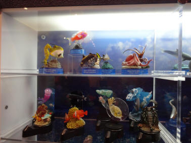
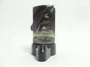
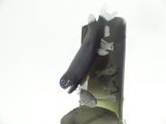
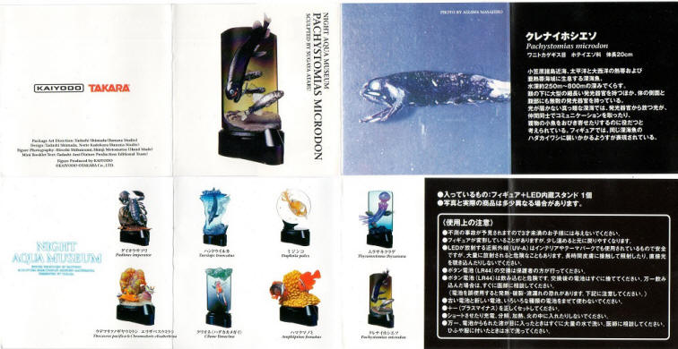

動物フィギュアを中心に紹介するページ。


NIGHT AQUA MUSEUM ナイトアクアミュージアム
|
 |
ラインナップ |
|---|---|
|
01. ダイオウサソリ 02. ハンドウイルカ 03. ミジンコ 04. ムラサキクラゲ 05. ウデフリツノザヤウミウシ エリザベスウミウシ 06. クリオネ(ハダカカメガイ) 07. ハマクマノミ 08. クレナイホシエソ |

販売開始時期：2004年12月 価格：300円 造形企画製作：海洋堂 造形総指揮：松村しのぶ
販売元：タカラ
「特殊塗料とUV発光LED内蔵スタンドによる光源で、幻想的な光を放つフィギュア(海洋堂レゾネより)」だそうです。シリーズとはならず、これだけで完結しています。図録シリーズとの住み分けが難しかったのでしょうか。ラインナップは水族館の人気者が少ない攻めたラインナップ。この時期にこのラインナップはさすがです。シークレットは無いのかな。
| 01. ダイオウサソリ | 02. ハンドウイルカ | ||
|---|---|---|---|
| 未入手 | 未入手 | ||
| 原型師：田熊勝夫 | 原型師：松本栄一郎 | ||
| 03. ミジンコ | 04. ムラサキクラゲ | ||
| 未入手 | 未入手 | ||
| 原型師：松本栄一郎 | 原型師：山本聖士 | ||
| 05. ウデフリツノザヤウミウシエリザベスウミウシ | 06. クリオネ(ハダカカメガイ) | ||
| 未入手 | 未入手 | ||
| 原型師：菅谷 中 | 原型師：松本栄一郎 | ||
| 07. ハマクマノミ | 08. クレナイホシエソ | ||
| 未入手 |
 |
 |
|
| 原型師：山本聖士 | 原型師：菅谷 中 小笠原などに生息する深海魚。眼の下や体の側面に発光器を持つ。 フィギュアはハダカイワシに襲い掛かるところを表現。 |
||


| 解説書 | |
|---|---|
|
 |
|